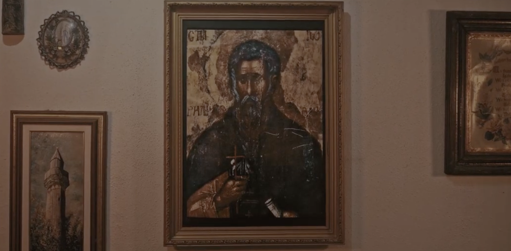
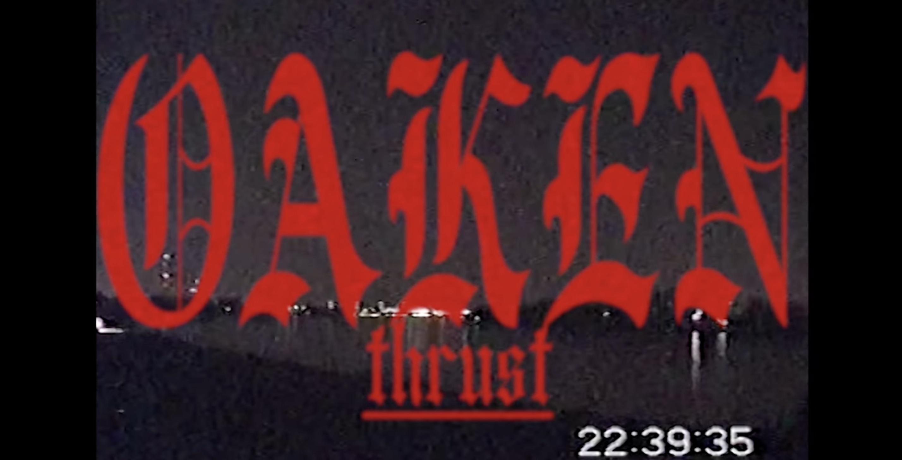

Oaken is D G D L G
Recorded at Ól recording, 2024
Mixed and Mastered by Miklós Nagy (www.instagram.com/olrecording)
Cover art by Viktor Nagy (www.instagram.com/viktornagy)
Layout by Tamás Slabéczi

Oaken is D G D L G
Directed by Kispál László
Actors: Antal Bálint, Horváth Márton, Karácsonyi Gábor
Oaken is D G D L G
Recorded in SuperSize Recording 2018
Additional Vocals by Csaba Kósa and Zsófi Tóth
Mixed and Mastered by Dexter
Cover art by Adrián Majoros
released by the following labels:
Hardcore4Losers,Dingleberry Records,Ill Will Records,9Lies,Tortured Tree Productions,Itai Itai

2 guitars, 1 bass, 4 synthesizers, 1,5 drumkits and fell voices of collective desolation. Oaken is a post-hardcore band from Budapest (HU).